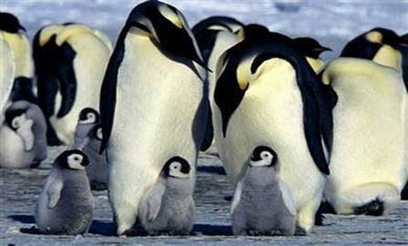
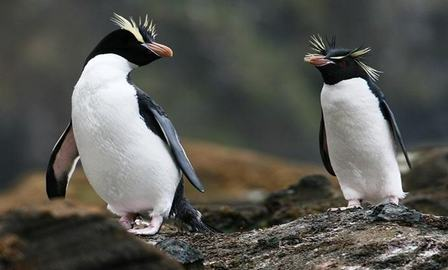

Nếu như độc giả nào đã từng xem bộ phim Happy Feet của đạo diễn George Miller nói về 1 chú chim cánh cụt tên là Mumble không biết hát nhưng bù lại khiêu vũ rất giỏi thì chắc hẳn sẽ không thể quên được hình hài dễ thương của loài động vật này. Một loài chim với thân hình ngộ nghĩnh sống chủ yếu ở Nam Bán Cầu với nhiệt độ trung bình hàng năm thấp nhất trên trái đất. Chúng ta hãy cùng khám phá những thông tin về những chú chim cánh cụt mập mạp nhưng ẩn chứa khá nhiều điều thú vị này nhé.
Hình dạng các bạn thường thấy ở loài chim cánh cụt là phần trắng ở bụng và phần sẫm bao phủ đằng sau lưng. Chúng sử dụng đôi cánh ngắn để làm chân chèo khi lặn ngụp dưới nước. Chân trước dùng để di chuyển trên mặt đất với dáng vẻ khá lạch bạch và đặc biệt loài cánh cụt biết tận dụng tấm bụng phía trước để trườn trên tuyết mỗi khi muốn đi với tốc độ nhanh hơn.
Trên thế giới hiện có khoảng 18 loài chim cánh cụt khác nhau. Tuy nhiên, trong số đó 13 loài đã bị suy giảm quần thể do khí hậu, môi trường sinh sống và sự thiếu trách nhiệm trong việc bảo tồn loài động vật của con người. Đáng báo động hơn, có 5 loài được liệt vào danh sách nguy cơ tiệt chủng do hiệp hội liên minh bảo tồn thiên nhiên quốc tế thống kê gồm có White-flippered, Erect-crested, Galapagos, Humboldt và Yellow eyed. Chim cánh cụt là loài sống theo quần thế, có tính xã hội cao, luôn tập trung theo bầy đàn. Mỗi quần thể có thể lên tới hàng chục ngàn con. Mặc dù với số lượng đông và khó kiểm soát như thế này, nhưng mỗi cặp đôi cha mẹ cánh cụt, chúng đều có thể nhận biết và trông chừng đứa con của mình thông qua thính giác đặc biệt.
